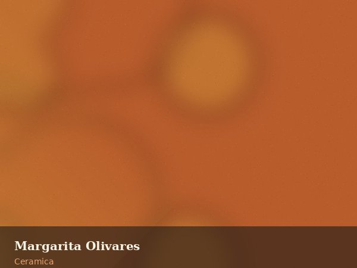

Conferencia inaugural

Ceramica tradicional
Margarita Olivares
Treinta años al torno y al horno. Su taller en La Bisbal recupera tecnicas medievales y forma a la nueva generacion de alfareras de la comarca.